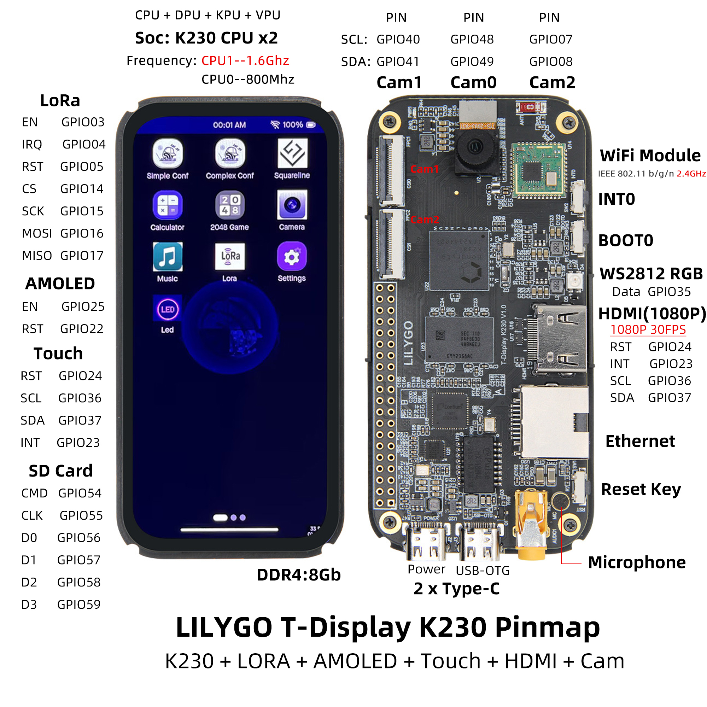

中文 简体
中文 简体LILYGO T-Display K230

版本迭代:
| Version | Update date | Update description |
|---|---|---|
| T-Display-K230_canmv_rt_V1.0 | 2025-02-20 | 原始版本 |
| T-Display-K230_canmv_rt_V1.1 | 2025-03-25 | 更新LoRa模块（sx1262） |
购买链接
| Product | SOC | FLASH | LPDDR | Link |
|---|---|---|---|---|
| T-Display-K230_canmv_rt | k230 | SD Card | 1GiB | LILYGO Mall |
目录
描述
T-Display K230 是 LILYGO 基于嘉楠科技最新 K230 芯片设计的高性能 AIoT 开发板。作为 K210 的升级产品，K230 集成了双核 RISC-V 处理器，主频高达 1.6GHz，并配备算力接近 1.6TOPS 的 NPU（神经网络处理单元），为 AI 推理提供强大的加速能力。
开发板采用符合手持设备尺寸的设计，配备 4.1 英寸优质 AMOLED 屏幕（568×1232 分辨率），支持电容触摸，提供流畅的视觉和交互体验。同时集成了 LoRa 通信模块（SX1262/SX1280）、HDMI 输出接口、以太网接口、摄像头接口等丰富功能，适用于 AI 视觉识别、边缘计算、物联网监控等高端应用场景。
预览
实物图

引脚图

模块
主处理器
- 芯片：K230 双核 RISC-V
- 大核：1.6GHz，32KB I-cache，32KB D-cache，256KB L2 Cache，128bit RVV 1.0扩展
- 小核：0.8GHz，32KB I-cache，32KB D-cache，128KB L2 Cache
- NPU：1.6TOPS，支持 INT8/INT16，Resnet50 ≥ 85fps @INT8
协处理器
- 芯片：ESP32-S3-R8
- PSRAM：8MB
- FLASH：16MB
- 功能：Wi-Fi/蓝牙连接，系统辅助控制
屏幕
- 尺寸：4.1英寸 AMOLED
- 分辨率：568x1232px
- 屏幕类型：AMOLED
- 接口：MIPI DSI (2 lane)
- 触摸：电容触摸屏
- 驱动芯片: RM69A10
LoRa
- 芯片：SX1262 / SX1280（可选）
- 频率：433-923MHz (SX1262) / 2.4GHz (SX1280)
触摸
- 芯片: GT9895
- 总线通信协议: IIC
充电支持
- 芯片: SY6970
- 总线通信协议: IIC
- 如果仅使用 5V 电源供电而未连接电池，该芯片的输出波形将会非常不稳定。为使情况稳定下来，需要要么连接电池，要么使用软件来禁用电池通道。通过这样做，不稳定的情况将会得到缓解。
概述
| 组件 | 描述 |
|---|---|
| 主CPU | K230 双核 RISC-V (1.6GHz + 0.8GHz) |
| NPU | 1.6TOPS，支持INT8/INT16 |
| 内存 | 8Gb LPDDR4 |
| 协处理器 | ESP32-S3-R8 (Wi-Fi/蓝牙) |
| 屏幕 | 4.1英寸 AMOLED (568×1232) |
| LoRa | SX1262 (433-923MHz) / SX1280 (2.4GHz) |
| 摄像头 | 3路 MIPI CSI-2 接口 |
| 视频输出 | HDMI (1080P@30fps) |
| 音频 | 3.5mm音频口 + 麦克风 |
| 网络 | Wi-Fi 802.11b/g/n + 以太网 |
| 存储 | TF卡 |
| USB | 1 × POWER + 1 × USB 2.0 OTG (TYPE-C) |
| IO 接口 | 2.54mm间距 2×20 拓展IO接口 |
| 按键 | RST + BOOT + INT0 |
| 指示灯 | 电源指示灯 + RGB灯 |
| 尺寸 | 100×48×1.6mm (无外壳) |
快速开始
APP 编译
1.切换至当前目录：canmv_k230
cd canmv_k230/src/rtsmart/mpp
source build_env.sh
cd userapps/sample/sample_display
make
在sample/elf目录下生成sample_display.elf文件。
默认应用程序：示例显示程序
将sample_display.elf文件重命名为app.elf，然后将其复制到 SD 卡中。再次开机并默认启动运行即可。
定制 Firmware
本章介绍了如何在 K230 CanMV 上进行开发。如果您没有特殊需求，可以跳过此章节。
K230 CanMV 是基于 K230 SDK 开发的。
搭建开发环境
| 主机环境 | 描述 |
|---|---|
| Ubuntu 20.04.4 LTS (x86_64) | K230 CanMV 组合环境适用于 Ubuntu 20.04 及更高版本系统。 |
目前，K230 CanMV 仅在 Linux 环境中得到了编译验证。其他 Linux 版本尚未进行测试，因此无法保证其与其他系统的兼容性。
本地编译
- 更新 APT 源（可选）
sudo bash -c 'cp /etc/apt/sources.list /etc/apt/sources_bak.list && \
sed -i "s/archive.ubuntu.com/mirrors.tuna.tsinghua.edu.cn/g" /etc/apt/sources.list && \
sed -i "s/security.ubuntu.com/mirrors.tuna.tsinghua.edu.cn/g" /etc/apt/sources.list'
- 安装必要的依赖项
# Add support for i386 architecture
sudo bash -c 'dpkg --add-architecture i386 && \
apt-get clean all && \
apt-get update && \
apt-get install -y --fix-broken --fix-missing --no-install-recommends \
sudo vim wget curl git git-lfs openssh-client net-tools sed tzdata expect mtd-utils inetutils-ping locales \
sed make cmake binutils build-essential diffutils gcc g++ bash patch gzip bzip2 perl tar cpio unzip rsync \
file bc findutils dosfstools mtools bison flex autoconf automake python3 python3-pip python3-dev python-is-python3 \
lib32z1 scons libncurses5-dev kmod fakeroot pigz tree doxygen gawk pkg-config libyaml-dev libconfuse2 libconfuse-dev \
libssl-dev libc6-dev-i386 libncurses5:i386'
- 更新 PIP 源（可选）
pip3 config set global.index-url https://pypi.tuna.tsinghua.edu.cn/simple && \
pip3 config set global.extra-index-url "https://mirrors.aliyun.com/pypi/simple https://mirrors.cloud.tencent.com/pypi/simple"
- 安装 Python 依赖项
pip3 install -U pyyaml pycryptodome gmssl jsonschema jinja2
- 安装仓库工具
mkdir -p ~/.bin
curl https://storage.googleapis.com/git-repo-downloads/repo > ~/.bin/repo
chmod a+rx ~/.bin/repo
echo 'export PATH="${HOME}/.bin:${PATH}"' >> ~/.bashrc
source ~/.bashrc
编译过程
源代码下载
CanMV-K230 的源代码存放在 Github 上。用户可以使用“仓库”工具来下载该源代码。
# 建议在用户主目录下先创建一个文件夹，然后再下载代码。
mkdir -p ~/canmv_k230_pro && cd ~/canmv_k230_pro
# 下载 RT-Smart + CanMV 项目
git clone https://github.com/Xinyuan-LilyGO/T-Display-K230_canmv_rt.git
代码准备
首次编译时，您需要下载工具链。以下命令只需执行一次即可
cd canmv_k230
# 首次运行时请下载工具链。
make dl_toolchain
编译
根据实际需求选择相应的板卡配置文件，然后开始编译
# 列出可用配置选项
make list_def
# 选择相应的板卡配置文件
make k230_canmv_defconfig # 替换为适合您的板卡的配置文件
# 开始编译
time make log
编译完成后，在canmv_k230/build/bin目录下生成app.bin文件，烧写到K230的SPI Flash中。
Firmware 下载
在windows平台烧写固件
在 Windows 系统中，您可以使用 Rufus 工具将固件写入 TF 卡。Rufus 的下载地址为： Rufus Official Website.
- 将 TF 卡插入您的电脑，并启动 Rufus 工具。在界面中点击“选择”按钮，然后选择要刷入的固件文件。

- 点击“开始”按钮，Rufus 工具将自动识别设备，并开始烧写固件。


在Linux平台烧写固件
在插入 TF 卡之前，首先运行以下命令来检查当前的存储设备：
ls -l /dev/sd\*
接下来，将 TF 卡插入主机，并再次运行相同的命令以识别新添加的设备节点，该设备节点即为 TF 卡的设备节点。
假设 TF 卡的设备节点为 /dev/sdc，您可以使用以下命令将固件写入该 TF 卡：
sudo dd if=sysimage-sdcard.img of=/dev/sdc bs=1M oflag=sync
引脚总览
| AMOLED Screen Pin | k230 Pin |
|---|---|
| LCD_RST | GPIO22 |
| Touch Chip Pin | k230 Pin |
|---|---|
| TP_RST | GPIO24 |
| TP_SCL | GPIO36 |
| TP_SDA | GPIO37 |
| TP_INT | GPIO23 |
| HDMI Pin | k230 Pin |
|---|---|
| HDMI_RSTN | GPIO24 |
| HDMI_INT | GPIO22 |
| HDMI_CSCL | GPIO36 |
| HDMI_CSDA | GPIO37 |
| SD Card Pin | k230 Pin |
|---|---|
| TFCARD_CMD | GPIO54 |
| TFCARD_CLK | GPIO55 |
| TFCARD_D0 | GPIO56 |
| TFCARD_D1 | GPIO57 |
| TFCARD_D2 | GPIO58 |
| TFCARD_D3 | GPIO59 |
相关测试
| Firmware | Program | Description |
|---|---|---|
[T-Display-k230-AMOLED-1.43_V1.0][Light_Sleep_Wake_Up]_firmware_V1.0.0.bin |
Light Sleep Wake Up |
Power dissipation: 1282.8uA |
[T-Display-k230-AMOLED-1.43_V1.0][Deep_Sleep_Wake_Up]_firmware_V1.0.0.bin |
Deep Sleep Wake Up |
Power dissipation: 174.2uA |
图片可进入GITHUB查看
常见问题
- 问：阅读了上述教程后，我还是不清楚如何搭建编程环境。我该怎么办？
- 答：如果您在阅读了上述教程后仍不明白如何搭建环境，您可以参考 LilyGo-Document 文档中的说明来进行搭建。